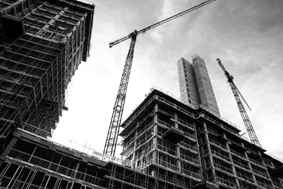
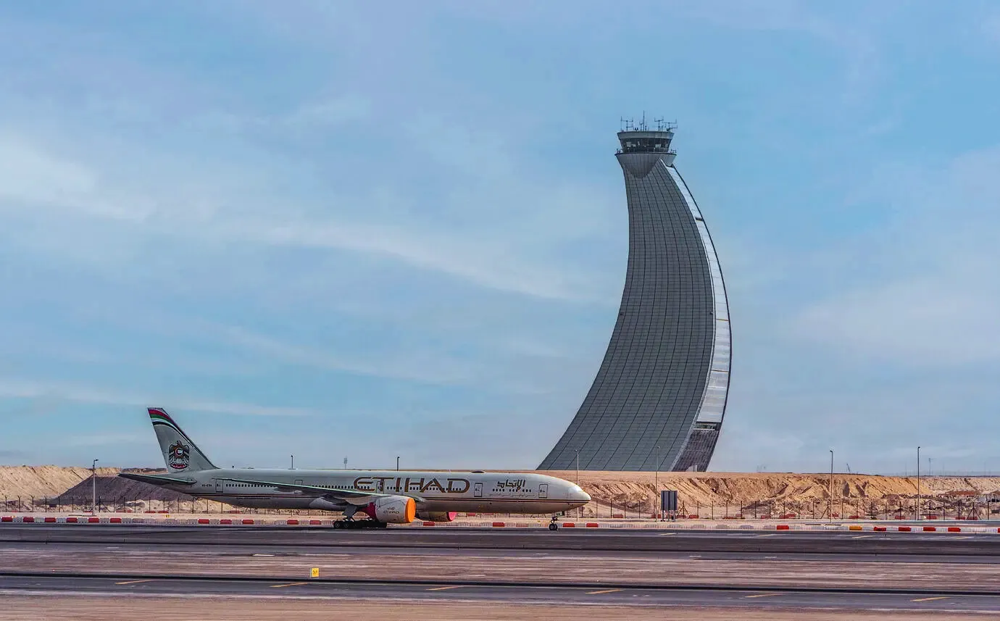

HOME > 회사소개 > 기술혁신
기술혁신 R&D INNOVATION
R&D INNOVATION
01 R&D OVERVIEW 연구개발 개요
기술과 현장을 연결하는
금호건설 기술연구소
금호건설 기술연구소
금호건설 기술연구소는 구조물의 안전성과 시공 효율, 환경기술을 연구합니다.
특화기술을 고도화하고 우수기술을 현장에 맞게 발전시켜,
연구성과가 실질적인 고객가치로 이어지도록 연결합니다.
R&D APPROACH
- 01
- 특화기술 고도화
- 02
- 선진기술 현장화
- 03
- 연구성과 실용화
RESEARCH
FOR BETTER
TOMORROW
TECH
02 RESEARCH DOMAINS 핵심 연구영역
KEY FOCUS STRUCTURE · CONSTRUCTION · ENERGY WATER · CIRCULAR · ENVIRONMENT
-

CIVIL & ARCHITECTURE- 01 CIVIL 분절형 PC아치교 급속시공 기술
- 중·소규모 교량 부재를 사전 제작해 현장 타설을 줄이고 신속한 시공을 가능하게 하는 공법
- 02 ARCHITECTURE 자기치유형 구체방수 콘크리트
- 균열을 스스로 치유하고 내부를 수밀화해 방수성과 하중저항 성능을 높이는 기술
- 03 CIVIL 변단면 슬립폼 급속시공 기술
- 콘크리트 타워·주탑·교각의 단면 변화에 대응하면서 연속 시공으로 공사기간을 단축하는 기술
- 04 CIVIL 교량 면진 시스템
- 면진받침의 마찰과 감쇠 성능을 이용해 지진력을 줄이고 교량 구조물의 안전성을 높이는 기술
-

ENVIRONMENT & ENERGY- 01 ENERGY 유기성 폐기물 바이오가스화 기술
- 음식물류 폐기물·가축분뇨·하수슬러지를 활용해 바이오가스를 생산하는 친환경 에너지 기술
- 02 ENVIRONMENT 고효율 역삼투 수처리 기술
- 막여과 전처리와 에너지 회수장치를 적용해 해수담수화와 하수 재이용의 효율을 높이는 기술
- 03 ENVIRONMENT KIDEA 하·폐수 고도처리 공법
- 혼합·포기·침전·방류 과정을 연속적으로 운영해 안정적인 처리수질을 확보하는 하·폐수 처리기술
- 04 ENVIRONMENT KUMHO-MBR 공법
- 분리막과 생물학적 처리공정을 결합해 질소와 인의 제거효율을 높이는 하·폐수 고도처리 기술
03 TECHNOLOGY CERTIFICATIONS 기술인증 현황
현장에서 검증된 연구성과를 신기술과 인증으로 축적해 왔습니다.
| 구분 | 기술명 | 등록·인증번호 | 개발·취득일 |
|---|---|---|---|
| 건설기술 | 경량 패널을 이용한 네일형 절토부 옹벽 공법 | 제922호 | |
| 건설기술 | 비정형 프리캐스트 합성보 기술 | 제860호 | |
| 환경기술 | 막여과 역세척수의 망간 제거를 통한 막오염 저감기술 | 인증 제535호 / 검증 제215호 | |
| 특허기술 | 덮개부재와 수평관통 보강부재를 이용한 관로 설치용 받침대 시공방법 | 10-1859538 | |
| 건설기술 | 변단면 슬립폼 급속시공 기술 | 제776호 | |
| 환경기술 | 유기성 폐기물 바이오가스화 기술(KH-ABC) | GT-14-00231 | |
| 특허기술 | 처리수 배출장치 및 방법 | 10-1800278 | |
| 특허기술 | 생물세척장치 및 이를 이용한 토양복원장치 | 10-1779903 | |
| 특허기술 | 사철 기반의 망간사 제조방법 | 10-1734968 | |
| 건설기술 | BIM 기반 디지털 가상시공 기술 | 제776호 연계 | |
| 건설기술 | GFRP 모듈형 거푸집 패널 기술 | 제776호 연계 | |
| 건설기술 | GPS 기반 고주탑 시공 정밀도 및 형상관리 기술 | 제776호 연계 | |
| 건설기술 | 표면파 측정 기반 콘크리트 초기 양생강도 평가기술 | 제776호 연계 | |
| 건설기술 | 무선 전동식 스핀들을 이용한 슬립폼 시공기술 | 제776호 연계 | |
| 특허기술 | 순환유량 자동조절이 가능한 미세기포 발생장치 | 10-1777655 | |
| 특허기술 | 바이오가스 탈황장치 | 10-1721542 | |
| 특허기술 | 흡착제 재생이 가능한 수처리장치 및 수처리 방법 | 10-1642081 | |
| 특허기술 | 바이오가스 메탄농도 제어가 가능한 수평형 혐기성 소화조 | 10-1647115 | |
| 환경기술 | 수평형 혐기소화조를 이용한 유기성 폐기물 바이오가스화 기술 | 인증 제441호 / 검증 제185호 | |
| 특허기술 | 조립구조를 갖는 저심도 박스형 지하구조물 및 시공방법 | 10-1710045 | |
| 특허기술 | 지열 냉난방 시스템용 지중열교환장치 | 10-1598562 | |
| 환경기술 | 유동전류 제어형 막여과 정수처리 기술 | 인증 제320호 / 검증 제138호 | |
| 환경기술 | 하수 고도처리 및 호기성 막 분리 슬러지 감량 기술 | 인증 제293호 / 검증 제125호 | |
| 환경기술 | 완전혼합·관형흐름 형태의 SBR 하수 고도처리 기술 | 인증 제227호 / 검증 제113호 | |
| 환경기술 | 침지형 평막을 이용한 하수 고도처리 기술(K-MBR) | 제110호 | |
| 건설기술 | 폐타이어 및 폐유리 미분말 활용 탄성 도막 방수공법 | 제349호 | |
| 환경기술 | 단일반응조 간헐방류식 하수 고도처리 기술(KIDEA) | 인증 제7호 / 검증 제8호 | |
| 건설기술 | 마찰형 포트받침을 이용한 교량 면진 시스템 | 제229호 | |
| 건설기술 | 분절형 PC아치교 급속시공 기술 | 자체개발 | — |
| 건설기술 | 자기치유형 구체방수 콘크리트 기술 | 자체개발 | — |
※ 기존 홈페이지에 공개된 주요 인증 내역을 기준으로 구성한 포트폴리오 시안입니다.